N-D Test Functions M¶
N-D Test Functions M¶Matyas test objective function.
This class defines the Matyas global optimization problem. This is a multimodal minimization problem defined as follows:
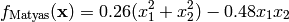
Here,  represents the number of dimensions and
represents the number of dimensions and ![x_i \in [-10, 10]](_images/math/d511ca3206c16bae3e3af3c02835f3fe9fb07286.png) for
for  .
.
Two-dimensional Matyas function
Global optimum:  for
for  for
for
McCormick test objective function.
This class defines the McCormick global optimization problem. This is a multimodal minimization problem defined as follows:
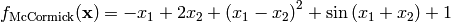
Here, represents the number of dimensions and 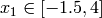, 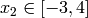.
Two-dimensional McCormick function
Global optimum: 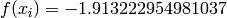 for 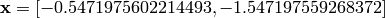
Michalewicz test objective function.
This class defines the Michalewicz global optimization problem. This is a multimodal minimization problem defined as follows:
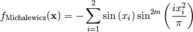
Where, in this exercise, .
Here, represents the number of dimensions and 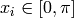 for .
Two-dimensional Michalewicz function
Global optimum: 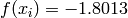 for for
Miele-Cantrell test objective function.
This class defines the Miele-Cantrell global optimization problem. This is a multimodal minimization problem defined as follows:
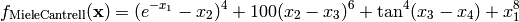
Here, represents the number of dimensions and ![x_i \in [-1, 1]](_images/math/69d20098894c45659a72bd07f85a904ff6726b1e.png) for 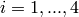.
for 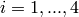.
Global optimum: for 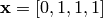
Mishra 1 test objective function.
This class defines the Mishra 1 global optimization problem. This is a multimodal minimization problem defined as follows:
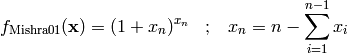
Here, represents the number of dimensions and ![x_i \in [0, 1]](_images/math/e365bfdf2ca5275ec86c322fa2fe576a37b0efd7.png) for
for  .
.
Two-dimensional Mishra 1 function
Global optimum: 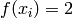 for  for
for
Mishra 2 test objective function.
This class defines the Mishra 2 global optimization problem. This is a multimodal minimization problem defined as follows:
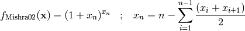
Here, represents the number of dimensions and for .
Two-dimensional Mishra 2 function
Global optimum: for for
Mishra 3 test objective function.
This class defines the Mishra 3 global optimization problem. This is a multimodal minimization problem defined as follows:
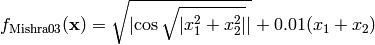
Here, represents the number of dimensions and for .
Two-dimensional Mishra 3 function
Global optimum:  for 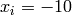 for
for 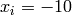 for
Mishra 4 test objective function.
This class defines the Mishra 4 global optimization problem. This is a multimodal minimization problem defined as follows:
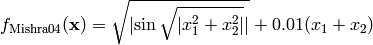
Here, represents the number of dimensions and for .
Two-dimensional Mishra 4 function
Global optimum: 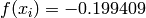 for for
Mishra 5 test objective function.
This class defines the Mishra 5 global optimization problem. This is a multimodal minimization problem defined as follows:
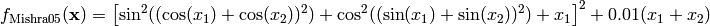
Here, represents the number of dimensions and for .
Two-dimensional Mishra 5 function
Global optimum: 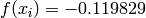 for ![\mathbf{x} = [-1.98682, -10]](_images/math/2ecafdb455ba5f29d45e3003854ad66015fe5d36.png)
Mishra 6 test objective function.
This class defines the Mishra 6 global optimization problem. This is a multimodal minimization problem defined as follows:
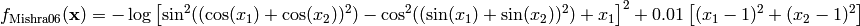
Here, represents the number of dimensions and for .
Two-dimensional Mishra 6 function
Global optimum: 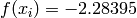 for 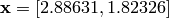
Mishra 7 test objective function.
This class defines the Mishra 7 global optimization problem. This is a multimodal minimization problem defined as follows:
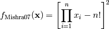
Here, represents the number of dimensions and for .
Two-dimensional Mishra 7 function
Global optimum: for 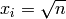 for
Mishra 8 test objective function.
This class defines the Mishra 8 global optimization problem. This is a multimodal minimization problem defined as follows:
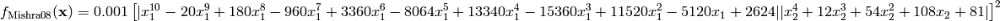
Here, represents the number of dimensions and for .
Two-dimensional Mishra 8 function
Global optimum: for 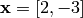
Mishra 9 test objective function.
This class defines the Mishra 9 global optimization problem. This is a multimodal minimization problem defined as follows:
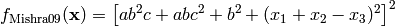
Where, in this exercise:
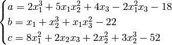
Here, represents the number of dimensions and for  .
.
Global optimum: for 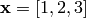
Mishra 10 test objective function.
This class defines the Mishra 10 global optimization problem. This is a multimodal minimization problem defined as follows:
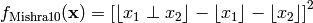
Here, represents the number of dimensions and for .
Two-dimensional Mishra 10 function
Global optimum: for ![\mathbf{x} = [2, 2]](_images/math/cd386ccfd141f73b36f03fca835355fe54ed576c.png)
Mishra 11 test objective function.
This class defines the Mishra 11 global optimization problem. This is a multimodal minimization problem defined as follows:
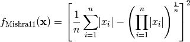
Here, represents the number of dimensions and for .
Two-dimensional Mishra 11 function
Global optimum: for for
MultiModal test objective function.
This class defines the MultiModal global optimization problem. This is a multimodal minimization problem defined as follows:
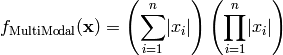
Here, represents the number of dimensions and for .
Two-dimensional MultiModal function
Global optimum: for for